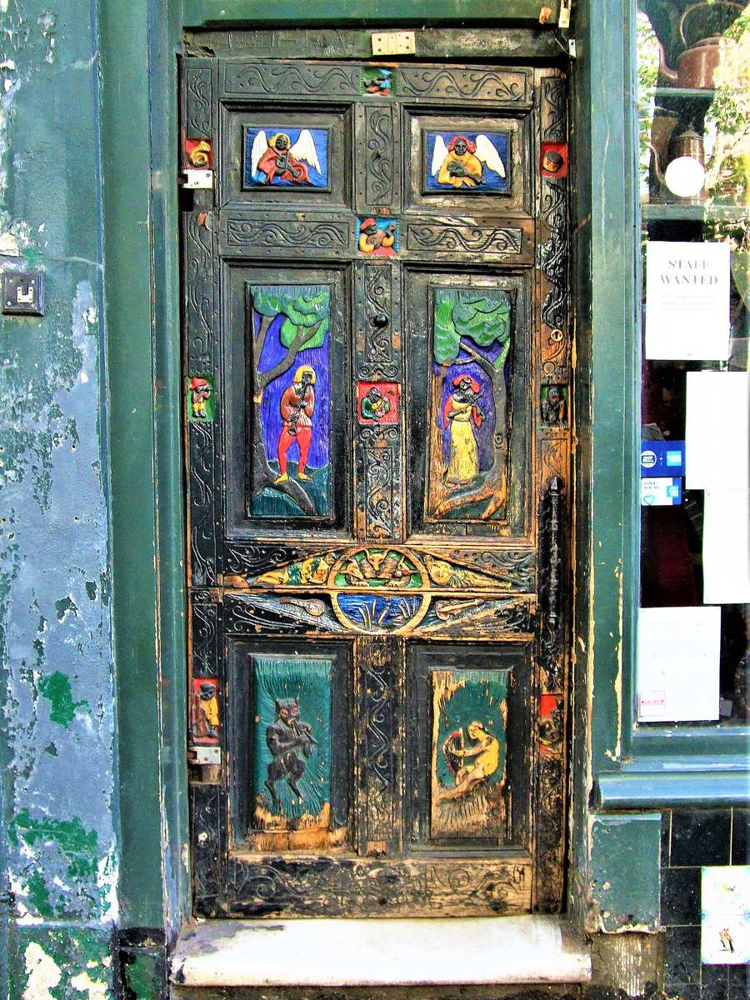
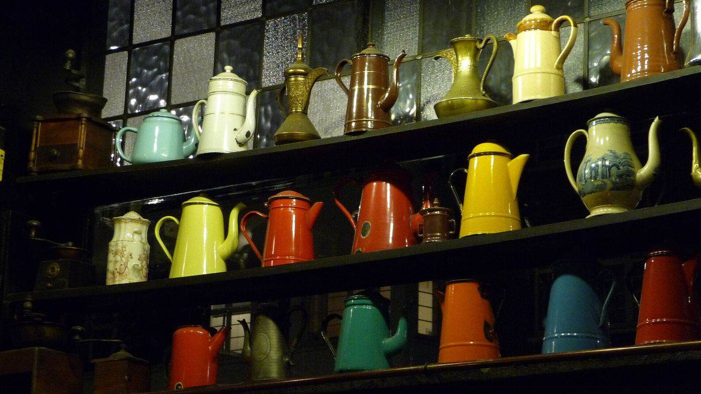
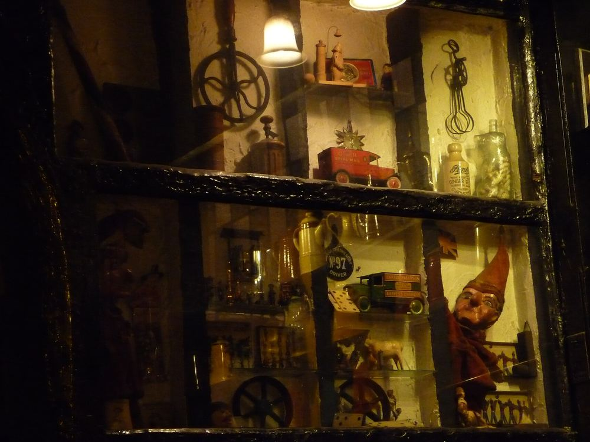
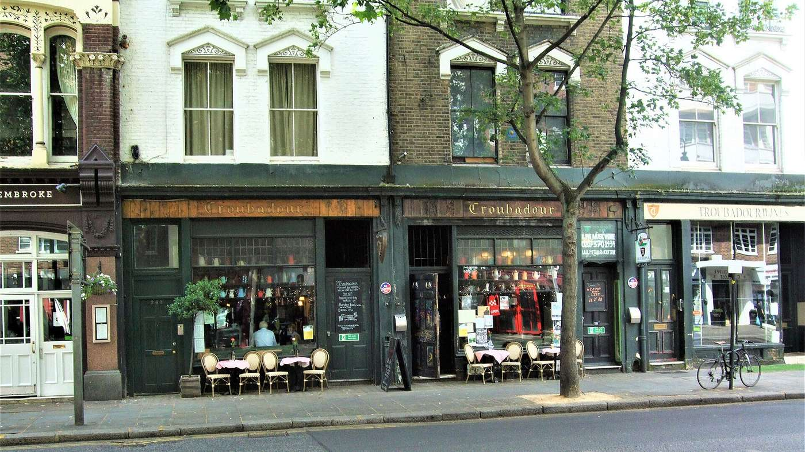

265–267 Old Brompton Road · SW5
A coffee house, a stage and a secret garden, since 1954.
One of London’s oldest independent music venues: restaurant, pub and coffee house by day, live music most nights.
Open daily · garden until 11pm

From the archive
Over seventy years of songs, ideas and late nights
- 1954
Founded by Michael and Sheila van Bloemen, part of London’s second wave of coffee houses.
- 1961
Private Eye is first published and distributed from the Troubadour. Charlie Watts plays here the same year.
- 1962
Bob Dylan performs as “Blind Boy Grunt” and meets Martin Carthy, who teaches him Scarborough Fair.
- 1965
Paul Simon, newly arrived in London, plays the folk club.
- 1970
The Dubliners are recorded here for the BBC on St Patrick’s Day.
- Today
A grassroots stage for new music most days of the week: Adele, Florence Welch, Ed Sheeran and Michael Kiwanuka have all played.

Live music
Jazz Sundays
A long-standing Troubadour tradition, directed by Sebastiaan de Krom, with first-rate musicians and international guests. Ideal for a cosy Sunday dinner or drinks. Doors and table reservations from 7.30pm, music from 8pm. Booking is highly recommended; a £9.50 entry fee per person is collected on the door.
On other nights, the grassroots stage hosts folk, rock, indie and everything between.

Eat & drink
From English breakfast to Wagyu burger
A selection from the Troubadour’s current menus. A discretionary 12.5% service charge is added.
Brunch until 2.30pm
- Troubadour English breakfast£15.50
- Crushed avocado on sourdough, roast tomato, feta£10.50
- Brioche French toast, streaky bacon, maple£11.75
- Eggs Royale with spinach£14.75
Evening
- Wagyu burger, steak-cut chips£18.75
- Sea bass fillet, heirloom tomatoes£24.95
- Cottage pie, red wine brisket, smoked cheddar mash£18.75
- Moroccan vegetable tagine (vg)£14.50
- Linguine & artichoke (v)£15.95
- Sticky toffee pudding£8.50
At the bar
- Troubadour Spritz£13
- Classic cocktailsfrom £12
- Draught Troubadour Solo lager, pint£5.75
- Pot of tea£4

Visit
265–267 Old Brompton Road
London SW5 9JA
Between Earl’s Court and West Brompton stations.
Opening hours
| Monday | 5pm – midnight |
|---|---|
| Tuesday | noon – midnight |
| Wednesday | noon – midnight |
| Thursday | noon – 2am |
| Friday | 10am – 2am |
| Saturday | 10am – 2am |
| Sunday | 10am – midnight |
The secret garden closes at 11pm.